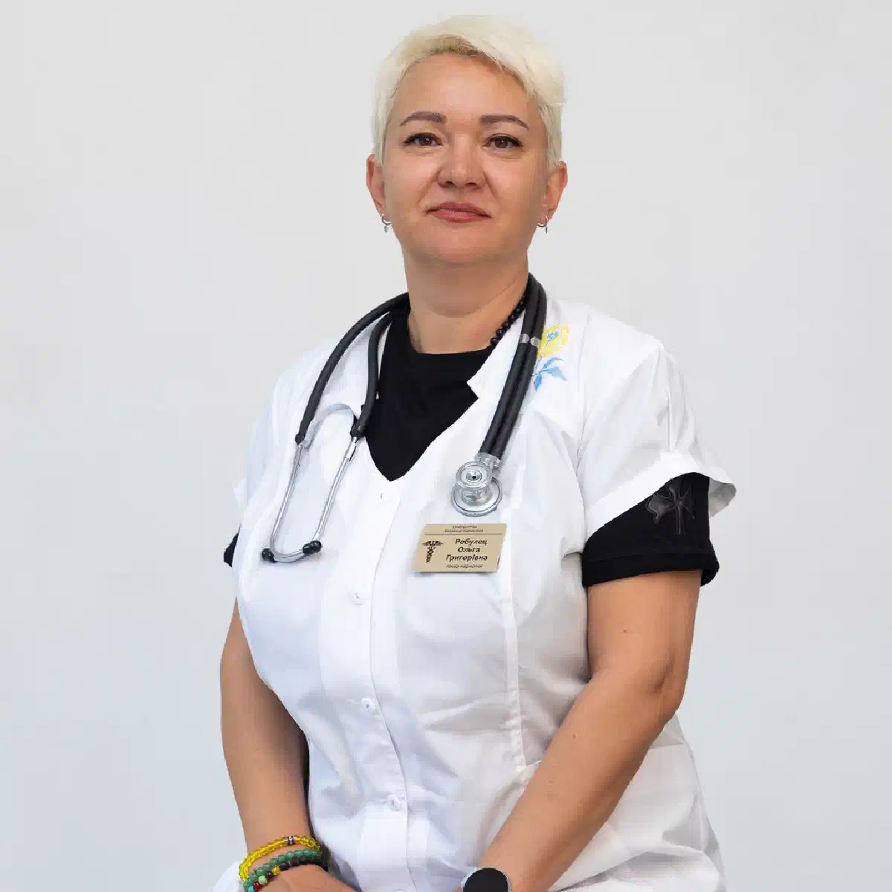

+38(068)
79 72 782
+38(068)
79 72 782Лечение алкоголизма в стационаре в Харькове
Круглосуточное наблюдение и безопасная детоксикация


Бесплатная консультация, работаем круглосуточно 24/7
Круглосуточное наблюдение и безопасная детоксикация

Дата написания: 29 сент. 2026 г.
Последнее обновление: 30 сент. 2026 г.
Лечение алкоголизма в стационаре в Харькове проводится в тех случаях, когда пациенту требуется постоянное медицинское наблюдение, контроль жизненно важных показателей и возможность быстро изменить терапию при ухудшении состояния. Такой формат особенно важен после длительного запоя, при тяжёлой алкогольной абстиненции, выраженном обезвоживании, нестабильном артериальном давлении, нарушениях сердечного ритма, судорогах, галлюцинациях и спутанности сознания. Лечение алкоголизма в стационаре не ограничивается одной капельницей или кратковременным снятием симптомов. После первичной стабилизации врач оценивает выраженность зависимости, риск повторного употребления и необходимость дальнейшей психотерапии, кодирования или реабилитации. В условиях стационара можно провести полноценную детоксикацию от алкоголя, контролировать состояние пациента в динамике и своевременно выявить осложнения, которые в домашних условиях могут остаться незамеченными.
Стационарное лечение предпочтительно, если состояние пациента требует регулярного контроля или существует повышенный риск осложнений после прекращения употребления алкоголя. Это особенно актуально после продолжительного запоя, при выраженном треморе, бессоннице, тревоге, рвоте, обезвоживании, тахикардии и значительных колебаниях артериального давления. Лечение алкогольной зависимости в стационаре также рекомендуется рассматривать пациентам, у которых ранее уже возникали судороги, алкогольный делирий или другие тяжёлые проявления абстиненции. Дополнительными факторами риска являются пожилой возраст, заболевания сердца, печени, почек, сахарный диабет и одновременный приём большого количества лекарственных препаратов. В подобных ситуациях круглосуточное наблюдение позволяет быстрее заметить ухудшение и своевременно провести необходимое лечение.
Домашнее лечение возможно только при относительно стабильном состоянии и после медицинской оценки. Если запой продолжался длительное время, пациент дезориентирован, выраженно обезвожен, у него появились галлюцинации, судороги или значительно изменилось дыхание, лечение дома становится небезопасным. Даже проведённая капельница от алкоголя на дому не всегда позволяет полностью контролировать тяжёлую абстиненцию. Повторное ухудшение может возникнуть через несколько часов после первоначального облегчения. Если после домашней помощи сохраняются высокий пульс, выраженный тремор, бессонница, тревога или скачки давления, требуется повторный осмотр врача. В таких случаях наркологический стационар предоставляет более безопасные условия для дальнейшего лечения.
Стационарное лечение начинается с оценки общего состояния пациента и тяжести алкогольной абстиненции. Врач выясняет продолжительность употребления, примерное количество алкоголя, время последнего приёма спиртного, предыдущие попытки прекратить употребление и наличие тяжёлых осложнений в прошлом. Далее проводится осмотр, измеряются давление, пульс, температура, сатурация и оценивается состояние нервной системы. После обследования формируется индивидуальная программа лечения алкоголизма в Харькове. Она может включать инфузионную терапию, коррекцию водно-электролитного баланса, лечение тревоги и нарушений сна, контроль давления и пульса, питание и витаминную поддержку по показаниям. После стабилизации физического состояния пациенту предлагается следующий этап лечения зависимости.
Первый этап — первичный осмотр и определение тяжести состояния. Важно понять, находится ли пациент в состоянии алкогольной интоксикации, развивается ли абстинентный синдром или уже появились осложнения. Врач уточняет хронические заболевания, лекарства, которые принимает пациент, наличие аллергии и предыдущий опыт лечения. При необходимости проводится консультация нарколога в Харькове и назначаются дополнительные обследования. Только после этого выбирается объём инфузионной терапии и другие препараты. Такой подход позволяет избежать ненужных назначений и учитывать индивидуальные риски пациента.
Перед госпитализацией врач оценивает сознание, ориентацию, дыхание, частоту сердечных сокращений, давление и температуру. Отдельное внимание уделяется выраженности тремора, тревоги, бессонницы, тошноты, рвоты и обезвоживания. Обращение к наркологу особенно важно, если у пациента уже были судороги, алкогольный психоз или делирий. Врач также оценивает безопасность транспортировки пациента и определяет, требуется ли обычная госпитализация или экстренная помощь. При тяжёлом нарушении сознания, выраженной одышке, судорогах или других опасных симптомах приоритетом становится не плановый приём, а вызов экстренной медицинской службы.
Вывод из запоя в стационаре позволяет проводить лечение под постоянным медицинским наблюдением. Такой вариант особенно актуален после длительного употребления алкоголя, когда риск тяжёлой абстиненции значительно выше. В стационаре контролируются давление, пульс, состояние сознания, насыщение крови кислородом, водно-электролитный баланс и выраженность неврологических симптомов. При необходимости терапия корректируется несколько раз в течение суток. В отличие от вывода из запоя на дому в Харькове, стационар подходит пациентам, которым требуется круглосуточное наблюдение и более интенсивная медицинская помощь. После стабилизации важно перейти к дальнейшему лечению зависимости, иначе риск нового запоя остаётся высоким.
Детоксикация от алкоголя направлена на поддержку организма в период прекращения употребления и коррекцию нарушений, возникших во время запоя. По показаниям проводится инфузионная терапия, восполняется дефицит жидкости и электролитов, корректируются отдельные метаболические нарушения. Врач контролирует давление, частоту сердечных сокращений и общее состояние пациента. Детоксикацию нельзя воспринимать как «полное очищение организма за одну процедуру». Она помогает стабилизировать физическое состояние, но сама по себе не устраняет алкогольную зависимость и тягу к спиртному. После завершения этого этапа рекомендуется продолжить комплексное лечение.
Капельница для детоксикации назначается только по медицинским показаниям. Её состав зависит от степени обезвоживания, электролитных нарушений, давления, пульса, сопутствующих заболеваний и принимаемых лекарств. Инфузионные растворы могут использоваться для восполнения жидкости и введения назначенных препаратов. При этом универсальной капельницы, одинаковой для всех пациентов, не существует. В стационаре врач может наблюдать за переносимостью терапии и при необходимости менять скорость введения растворов или состав лечения. Это особенно важно у пациентов с заболеваниями сердца, почек и печени.
Длительный запой значительно увеличивает риск тяжёлой абстиненции. После прекращения алкоголя у пациента могут развиваться выраженная бессонница, тревога, тремор, тахикардия, скачки давления, потливость, тошнота и нарушения аппетита. В таких ситуациях снятие алкогольной интоксикации является лишь одним из этапов помощи. Необходимо наблюдать пациента и после того, как концентрация алкоголя в организме уменьшилась. Именно период отмены может быть наиболее опасным. В стационаре можно контролировать симптомы в динамике и своевременно проводить дополнительное лечение при их усилении.
Лечение алкогольной абстиненции в тяжёлой форме проводится под медицинским наблюдением. Абстинентный синдром может сопровождаться выраженным тремором, тревогой, бессонницей, тахикардией, повышенным давлением, возбуждением и нарушениями восприятия. В некоторых случаях развиваются судороги или делирий. В стационаре состояние оценивается регулярно, а терапия корректируется в зависимости от динамики симптомов. Особенно важно постоянное наблюдение в первые дни после прекращения длительного употребления алкоголя, когда риск осложнений остаётся наиболее высоким.
После длительного употребления алкоголя и его резкого прекращения могут возникнуть выраженные колебания давления и учащённое сердцебиение. Причинами могут быть абстиненция, обезвоживание, тревога, нарушение сна и сопутствующие заболевания сердечно-сосудистой системы. В стационаре проводится лечение тяжёлой абстиненции с контролем давления и пульса в динамике. При боли в груди, выраженной одышке, нарушениях сердечного ритма, резкой слабости или неврологических симптомах требуется срочная медицинская оценка. Нельзя самостоятельно пытаться быстро снизить давление несколькими препаратами одновременно.
Бессонница, тревожность, раздражительность и тремор часто появляются после прекращения длительного употребления алкоголя. Эти симптомы могут постепенно уменьшаться, но иногда они, наоборот, усиливаются и становятся предвестниками более тяжёлой абстиненции. Снятие абстинентного синдрома включает не только попытку восстановить сон, но и контроль общего состояния, давления, пульса и других симптомов. Самостоятельный приём сильных седативных препаратов опасен, особенно если в организме ещё присутствует алкоголь. В условиях стационара врач может подобрать терапию и наблюдать за её действием.
Зрительные, слуховые или тактильные галлюцинации после прекращения запоя требуют обязательной медицинской оценки. Даже если человек частично понимает, где находится, состояние может быстро ухудшиться. Тяжёлая алкогольная абстиненция иногда сопровождается нарушениями восприятия и выраженным возбуждением. Домашнее лечение в такой ситуации небезопасно. Пациенту необходимо наблюдение, контроль жизненно важных показателей и возможность быстро получить дополнительную медицинскую помощь.
Алкогольный делирий относится к наиболее тяжёлым осложнениям отмены алкоголя. Он может сопровождаться спутанностью сознания, дезориентацией, галлюцинациями, выраженным возбуждением, бессонницей, тахикардией, потливостью и нестабильным давлением. В такой ситуации необходим наркологический стационар, а при тяжёлом состоянии — экстренная медицинская помощь. Пациент требует круглосуточного наблюдения и контроля жизненно важных функций. Пытаться лечить алкогольный делирий обычной домашней капельницей опасно.
Судороги после прекращения употребления алкоголя являются серьёзным симптомом и требуют срочной медицинской оценки. После первого приступа могут возникнуть повторные судороги, а состояние пациента способно перейти в более тяжёлую форму алкогольной абстиненции. Госпитализация в наркологический стационар позволяет наблюдать пациента и своевременно проводить необходимое лечение. До приезда медиков важно обеспечить безопасность человека и не пытаться давать ему воду, таблетки или другие средства через рот во время нарушения сознания.
Одно из ключевых преимуществ стационарного лечения — возможность регулярно оценивать состояние пациента. Медицинский персонал контролирует сознание, давление, пульс, дыхание, температуру, сон и выраженность абстинентных симптомов. Круглосуточная наркологическая помощь особенно важна при нестабильном состоянии и высоком риске осложнений. При необходимости врач меняет лечение и назначает дополнительные обследования. Такой контроль позволяет быстрее выявить ухудшение и не ждать, пока симптомы станут критическими.
Объём обследования определяется состоянием пациента. Могут назначаться общий анализ крови и мочи, биохимические показатели, уровень глюкозы, электролитов, показатели работы печени и почек. По показаниям выполняется ЭКГ и другие исследования. Наркологический стационар в Харькове позволяет провести не только детоксикацию, но и дополнительную диагностику при подозрении на сопутствующие заболевания. Если выявляются признаки сердечной, неврологической или другой патологии, к обследованию могут подключаться профильные специалисты.
Схема лечения всегда подбирается индивидуально. В зависимости от состояния могут применяться инфузионные растворы, витаминная поддержка, препараты для лечения абстиненции, коррекции тревоги, нарушений сна, давления и других симптомов. Препараты при алкогольной абстиненции назначаются врачом с учётом возраста пациента, сопутствующих заболеваний и других лекарств. Одни и те же препараты подходят не всем. Самостоятельно повторять стационарную схему лечения дома небезопасно.
Продолжительность лечения определяется не фиксированным количеством дней, а состоянием пациента. Одному человеку может потребоваться несколько дней для стабилизации после запоя, другому — более длительное наблюдение и дальнейшая реабилитация. На сроки влияют продолжительность употребления, тяжесть абстиненции, наличие осложнений и хронических заболеваний. После снятия острых симптомов врач оценивает необходимость продолжить лечение алкогольной зависимости амбулаторно, пройти кодирование или реабилитационную программу.
Стоимость лечения алкоголизма в стационаре в Харькове начинается от 2199 грн.
| Популярные услуги | Цена |
|---|---|
| Нарколог Харьков | От 1500 грн |
| Капельница от алкоголя | От 2199 грн |
| Вывод из запоя на дому | От 2199 грн |
| Кодирование от алкоголизма | От 6000 грн |
Многих пациентов интересует возможность пройти анонимное лечение алкоголизма и сохранить конфиденциальность обращения. Формат оформления зависит от медицинского учреждения и цели обращения. При обычном добровольном лечении условия конфиденциальности следует уточнять заранее. Если пациенту требуется официальная медицинская справка, освидетельствование или документ для государственных органов, порядок оформления может отличаться. Важно заранее обсудить эти вопросы с клиникой до госпитализации.
После стабилизации физического состояния может рассматриваться кодирование от алкоголизма в стационаре. Перед процедурой необходим период трезвости, медицинская оценка и добровольное согласие пациента. Врач учитывает состояние сердечно-сосудистой системы, хронические заболевания и возможные противопоказания. Кодирование не заменяет полноценную работу с зависимостью. Для более устойчивого результата его рекомендуется сочетать с психотерапией и изменением поведения, связанного с употреблением алкоголя.
После снятия острых симптомов большое значение приобретает психотерапия при алкогольной зависимости. Она помогает определить ситуации, которые провоцируют употребление, научиться распознавать тягу и формировать другие способы реагирования на стресс. Работа может проводиться индивидуально, в группе или с участием родственников. Психотерапия особенно важна для пациентов, которые уже неоднократно проходили детоксикацию, но возвращались к алкоголю через несколько недель или месяцев.
После выписки важно продолжить лечение и не воспринимать отсутствие абстиненции как полное выздоровление. Пациенту рекомендуется соблюдать назначения врача, восстанавливать режим сна и питания и избегать ситуаций, связанных с употреблением алкоголя. Может быть рекомендована консультация нарколога после запоя, психотерапия, кодирование или реабилитация. Первые недели после выписки особенно важны, поскольку именно в этот период человек может столкнуться с сильной тягой и привычными провоцирующими ситуациями.
Срыв требует пересмотра предыдущего плана лечения, но не означает, что все предыдущие усилия были бесполезными. Врач оценивает продолжительность нового эпизода употребления, выраженность абстиненции и обстоятельства, которые привели к возвращению алкоголя. При необходимости проводится повторный вывод из запоя и медицинская стабилизация. После этого корректируется программа психотерапии, медикаментозной поддержки или реабилитации. Важно определить причины срыва и уменьшить вероятность повторения такой ситуации.
При многолетнем употреблении алкоголя пациенту часто требуется комплексная медицинская помощь. У таких людей чаще встречаются заболевания печени, сердца, нервной системы, нарушения питания и когнитивные изменения. Лечение хронического алкоголизма включает не только снятие интоксикации и абстиненции, но и оценку сопутствующих заболеваний. Стационар позволяет провести обследование, стабилизировать состояние и сформировать долгосрочный план лечения. После выписки важны регулярное наблюдение и профилактика повторных запоев.
У пациентов старшего возраста последствия запоя могут быть более тяжёлыми из-за сниженных компенсаторных возможностей организма и большого количества сопутствующих заболеваний. Особенно внимательно контролируются давление, сердечный ритм, дыхание, водный баланс и функция почек. Лечение алкоголизма у пожилых пациентов требует осторожного подбора препаратов и дозировок. При длительном запое или выраженной абстиненции стационарный формат часто безопаснее домашнего лечения.
Гипертония, аритмия, ишемическая болезнь сердца, сахарный диабет, заболевания печени и почек существенно влияют на выбор терапии. Врач должен учитывать взаимодействие назначенных препаратов и риск ухудшения хронической патологии. В подобных ситуациях лечение зависимости от алкоголя проводится одновременно с контролем сопутствующих заболеваний. Стационар особенно удобен тем, что позволяет наблюдать пациента в динамике и при необходимости быстро корректировать лечение.
Анонимный наркологический стационар в Харькове позволяет получить помощь при алкогольной зависимости с соблюдением конфиденциальности в пределах правил медицинского учреждения и действующего законодательства. При поступлении врач оценивает тяжесть состояния, после чего определяется объём детоксикации и последующего лечения. Пациент или родственники могут заранее уточнить условия пребывания, возможность посещений, оформление документов и варианты продолжения лечения после выписки.
Круглосуточное лечение алкоголизма в Харькове особенно важно при тяжёлой абстиненции и состояниях, способных быстро изменяться. Пациент находится под наблюдением не только днём, но и ночью, когда могут усиливаться тревога, бессонница, спутанность сознания и другие симптомы. Медицинский персонал контролирует давление, пульс, дыхание и динамику общего состояния. После стабилизации врач определяет дальнейшую стратегию лечения зависимости и профилактики повторного употребления.
Для плановой госпитализации можно обратиться за консультацией нарколога в Харькове, после которой врач определит показания к стационарному лечению. Желательно заранее сообщить продолжительность запоя, возраст пациента, наличие хронических заболеваний и симптомы, которые наблюдаются сейчас. При тяжёлой абстиненции, галлюцинациях, судорогах, потере сознания, выраженной одышке, боли в груди или другом опасном ухудшении состояния ожидать плановой консультации нельзя — требуется экстренная медицинская помощь. Своевременное обращение в наркологический стационар позволяет безопаснее пройти острый период и перейти от снятия симптомов к полноценному лечению алкогольной зависимости.
Телефон для консультации и вызова нарколога на дом в Харькове: +38(050-021-69-57)

Статья проверена экспертом
Робулец Ольга
Врач нарколог, ординатор
Возможно интересная статья:
Можно ли умереть от пьянки

Да, мы строго соблюдаем полную конфиденциальность на всех этапах лечения. Информация о пациенте, диагнозе и прохождении терапии не передаётся третьим лицам. Обращение к нам не влечёт постановку на учёт. Вы можете быть уверены в безопасности и анонимности.
Программа лечения разрабатывается индивидуально после консультации со специалистом. Учитываются вид зависимости, её длительность, физическое и психологическое состояние пациента. Такой подход позволяет повысить эффективность терапии и снизить риск срыва. Мы не используем шаблонные решения.
Да, мы сопровождаем пациентов и после основного курса лечения. Проводятся консультации, рекомендации по адаптации и профилактике рецидивов. При необходимости возможна дальнейшая психологическая поддержка. Это помогает сохранить результат и вернуться к полноценной жизни.
Анонимно

Ну в хлопців просто золоті руки й світла голова, мене капали Олексій та Владислав, буквально за декілька сеансів я наче заново народився, до цього пив більше 3х тижнів, не міг зупинитись, дуже радий що знайшов саме цих спеціалістів, всім рекомендую
Анонимно
В течение нескольких лет я злоупотреблял алкоголь, что привело к увольнению с работы и вызвало у меня мысли о суициде. Понимая, что такой образ жизни неприемлем, я обратился за помощью в клинику “Амбрела”. Здесь я смог преодолеть свою зависимость от спиртного благодаря заботливым и опытным врачам, а также эффективной системе лечения. Спустя более года я полностью избавился от желания употреблять алкоголь, и теперь моя жизнь вернулась в норму. Я даже не приближаюсь к спиртному! Благодарю врачей клиники “Амбрела” за их помощь и заботу.
Анонимно
Я обращался за помощью в различные клиники, пытаясь избавиться от своей зависимости от алкоголя, но без особых успехов. Никак не мог справиться с желанием прибегнуть к бутылке, пока друг не посоветовал мне обратиться в центр “Амбрелла”. Я записался на прием и был поражен заботливым отношением к пациентам. Уже прошло два года, и теперь я смотрю на алкоголь с абсолютной равнодушием, активно занимаюсь спортом и улучшил отношения в семье. Благодаря центру “Амбрелла” моя жизнь была спасена от алкогольной зависимости!
Анонимно
Хочу выразить свою благодарность врачам из центра алкоголизма “Амбрела” за то, что они буквально спасли мою жизнь. В течение последнего года я сильно увлекался питьем, и все это привело к катастрофическим последствиям. Хотя я ходил на терапевтические сеансы, но безрезультатно. Тогда я нашел адрес клиники “Амбрела” в интернете, изучил отзывы и информацию о центре, и записался на прием. Там мне сразу предложили методику лечения, которая помогла не только справиться с физической ломкой, но и психической зависимостью от алкоголя. Не буду распространяться, скажу только одно - после пребывания в этой клинике я стал другим человеком, и навсегда забыл, что такое привкус алкоголя. Больше меня не тянет на это! Я искренне верю, что в центре “Амбрела” трудятся настоящие целители душ!
Анонимно
После сложного развода мой сын начал подавлять свою обиду и горе употреблением алкоголя. Он старался скрывать это от меня, но я, как мать, почувствовала, что что-то не так. В конечном итоге, ситуация стала критической. Моя знакомая посоветовала мне обратиться в клинику “Амбрела”. Я была приятно удивлена их работой! Они помогли сыну преодолеть очередной период злоупотребления алкоголем, и с тех пор прошел уже более года, и он совсем не пьет.
Анонимно
Благодаря вашей помощи, моя семья была спасена. Я с трудом уговорила мужа начать лечение, и последний каплей был пьяное ДТП. К счастью, в аварии никто не пострадал, но это был для него сигнал к действию. Он наконец согласился пройти курс лечения на дому, в стационар не хотел ложиться. Лечение было трудным, и были моменты, когда срыв был настолько близок, но благодаря вашему центру Амбрелла мы справились с этим.
Анонимно
Для меня эта клиника стала настоящим спасением! Долгое время я упорно отказывался от лечения, уверен был, что со мной все в порядке. Но к счастью, семья уговорила меня попробовать. И сегодня я чувствую себя невероятно счастливым, осознавая, что мне абсолютно не нужен алкоголь. Огромное спасибо за помощь и поддержку, которые я получил здесь! Я благодарен вам за новую возможность жить полноценной и счастливой жизнью!
Анонимно
Выражаю благодарность ребятам, которые оказали мне помощь и не отвернулись. Уже 10 месяцев я остаюсь чистой. Благодарю за то, что помогли найти новый путь в моей жизни.
Номер телефона:
+380 (68) 797 27 82
+380 (50) 021 69 57
Адрес наркологического центра вашего города уточняйте по
телефону
Работаем в: Киеве, Одессе, Львове, Харькове, Днепре,
Запорожье, Черкассах, Чугуеве, Черноморске, Каменском
Telegram: t.me/umbrellaplus
График работы: Круглосуточно